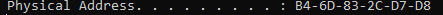

mac:Media Access Control

got by typing ipconfig /all
in linux called ether

anything using a network interface will have a mac address
take first 3 pairs of the mac address(they are basically identifiers) here B4-6D-83 and lookup in mac adresses online

for kali linux ka ether:

mac addresses - layer2 - switching